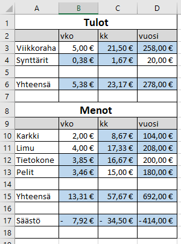

Yrityksellä on tuloja ja menoja, samoin yksittäisellä henkilöllä. Budjetti tarkoittaa erilaisten menojen kartoittamista ja tulolähteiden selvittämistä. Laskemalla nämä yhteen saadaan tieteen onko budjetti yli- vai alijäämäinen.
Laadi budjetti mieti mitä rahanlähteitä sinulla voisi olla. Mieti mihin rahasi kuluu. Mikäli haluat tehdä tämän budjetin mielikuvitusystävällesi niin sekin sopii hyvin.
